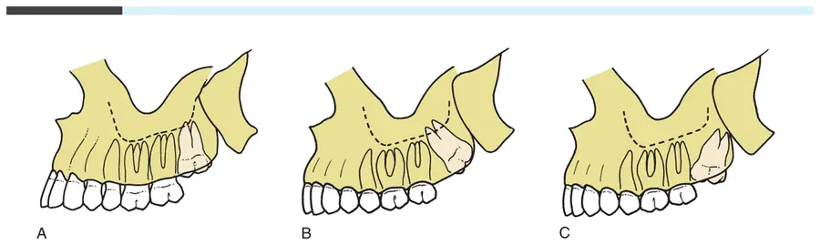

نسخه استخراجشده؛ ترجمه یا تأیید علمی انجام نشده است. وضعیت: captured
سیستمهای طبقهبندی مولر سوم نهفتهی ماگزیلا اساساً همان سیستمهای مندیبلاند، ولی برای ارزیابی دقیقتر سختی در مرحلهی طرح درمان، چند تمایز و افزوده لازم است.

سه نوع زاویه در ماگزیلا و درصدهایشان:
و حالا مهمترین جملهی این درس: همان زوایایی که در مندیبل درجههای سختی مشخصی میسازند، در ماگزیلا درجههای سختی وارونه ایجاد میکنند. نهفتگی عمودی و دیستوانگولار کمپیچیدهترین برای برداشتناند، در حالی که مزیوانگولار دشوارترین است — دقیقاً برعکس مولرهای سوم نهفتهی مندیبل.
چرا مزیوانگولار در ماگزیلا دشوارترین است — دو دلیل:
موقعیت باکوپالاتال — عاملی که در مندیبل تقریباً بیاهمیت بود و اینجا تعیینکننده است.
و راه تشخیصش، ترکیبی از کلیشه و انگشت است: ترکیب ارزیابی رادیوگرافیک و لمس دیجیتال بالینی ناحیهی توبروزیته معمولاً کمک میکند تعیین شود دندان در کدام موقعیت باکوپالاتال است. اگر دندان به سمت باکال باشد، یک برجستگی قابل لمس در ناحیه پیدا میشود؛ اگر پالاتالی باشد، یک کمبود استخوانی در آن ناحیه حس میشود. اگر با معاینهی بالینی موقعیت پالاتالتر تشخیص داده شد، جراح باید انتظار عملی طولانیتر و پیچیدهتر را داشته باشد.
شایعترین عامل ایجاد سختی در برداشتن مولر سوم ماگزیلا: ریشهی نازکِ جوشنخورده با انحنای نامنظم. اکثریت مولرهای سوم ماگزیلا ریشههای جوشخوردهی مخروطی دارند — ولی جراح باید کلیشهی پیش از عمل را با دقت بررسی کند تا مطمئن شود الگوی غیرمعمول ریشه وجود ندارد.
و سه عاملی که مثل مندیبل عمل میکنند:
رابطه با مولر دوم مجاور هم بر سختی اثر میگذارد: کشیدن ممکن است نیازمند برداشتن استخوان بیشتر برای جابهجا کردن دندانی باشد که زیر ارتفاع کانتور مولر دوم نزدیک جا خوش کرده. و چون در برداشتن مولرهای سوم ماگزیلا استفاده از الواتور رایج است، جراح باید از وجود ترمیمهای بزرگ یا پوسیدگی در مولر دوم مجاور آگاه باشد: استفادهی نسنجیده از الواتور میتواند به شکستن ترمیمها یا تاجهای شکننده بینجامد.
و طبقهبندی بافت پوشاننده در ماگزیلا: سیستم صنعت بیمه برای دندانهای ماگزیلا دقیقاً همان سیستم مندیبل است — بافت نرم، نیمهاستخوانی، کاملاً استخوانی — و تعریف این انواع دقیقاً همان تعاریف مولر سوم مندیبل است.
و حالا دو عاملی که تنها در ماگزیلا وجود دارند و در مندیبل معادلی ندارند — هر دو به سینوس ماگزیلا مربوطند:
چهار شرطی که خطر شکستگی توبروزیته را بالا میبرند — بهویژه هنگام آماده کردن purchase point در خط سرویکال مزیال: ۱) استخوان بیانعطاف باشد (مثل بیماران مسنتر)، ۲) دندان چندریشه با ریشههای بزرگ و بالبوس باشد (مثل بیماران مسنتر)، ۳) سینوس ماگزیلا بزرگ و بهشدت پنوماتیزه باشد تا حدی که ریشههای نهفته را دربر بگیرد، ۴) جراح نیروی بیش از حد برای الواسیون دندان به کار ببرد.
و دو عامل دیگر که خطر را بیشتر میکنند: مورفولوژی ریشهی واگرا نیروی بیشتری میطلبد، و نهفتگی مزیوانگولار احتمال شکستگی را بالا میبرد — چون در آن حالت توبروزیتهی رویی سنگینتر است، ولی استخوان اطراف معمولاً نازکتر.